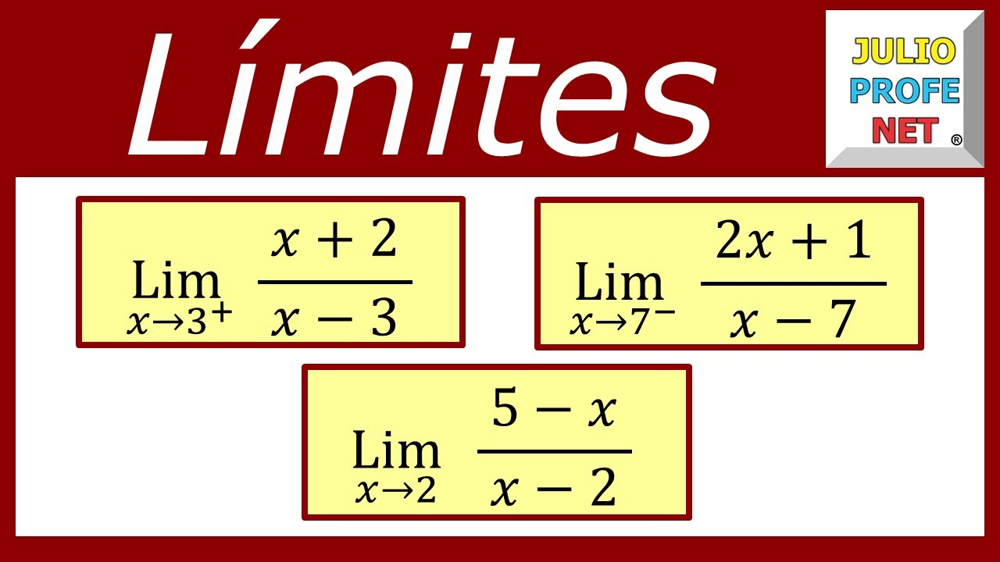
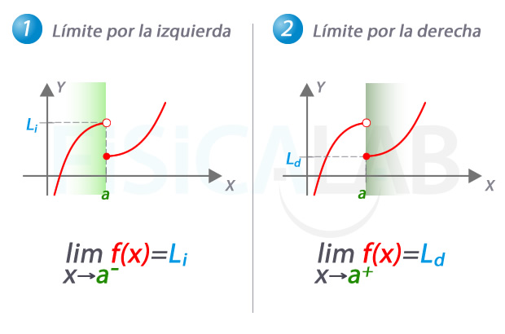
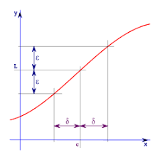

Limites de una funcion
Objetivos del Tema:
Aprendimos sobre como se puede comportar una funcion y el como cada funcion tiene su llamado limite, es un tema muy extenso en el que todavia estmaos aprendiendo
Limite de una funcion
Comportamineto de algunas funciones
Concepto del limite
